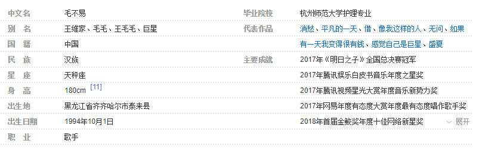

毛不易
基本信息
杂志写真
早年经历
毛不易出生于黑龙江省齐齐哈尔市泰来县，从小就喜欢音乐。上初中的时候，他给自己改名为“毛不易”，意为平凡、不改变 。他大学就读于杭州师范大学护理专业，虽然他想过换专业，但由于换专业需要成绩，且他的成绩一般，所以他便继续读护理专业 ；在校期间，他还参加了校园十佳歌手的比赛，并担任了杭州师范大学理学院“百万音镑”十佳歌手决赛评委。
2016年，他进入杭州地方医院实习，成为一名实习男护士；同年，他开始提笔写歌，并萌生了自学吉他的想法，他所创作的第一首歌曲是为出嫁的姐姐而写的 。